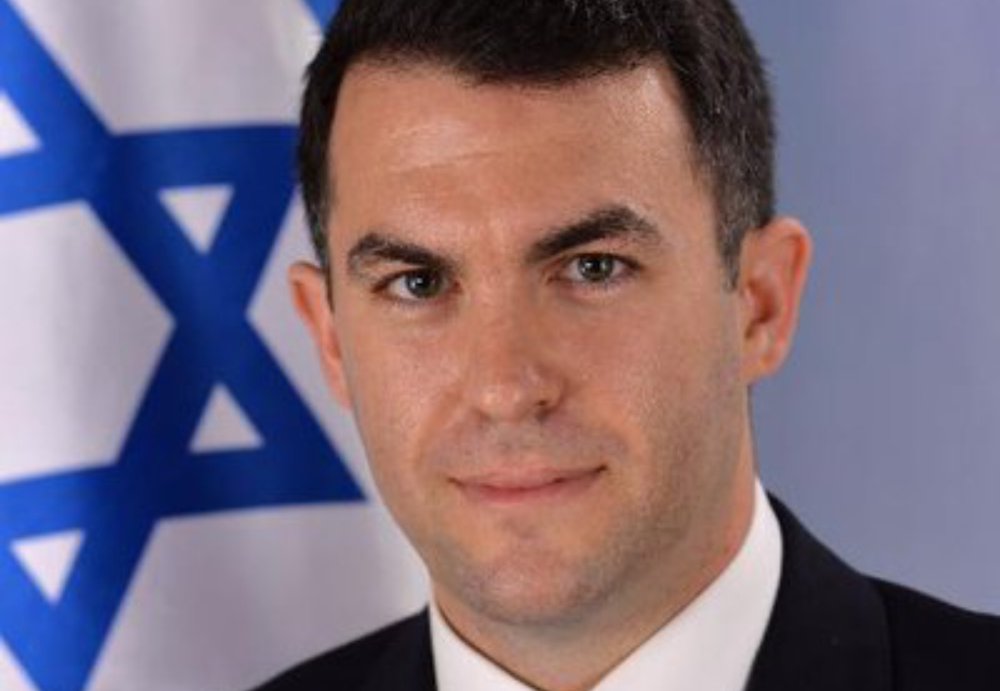
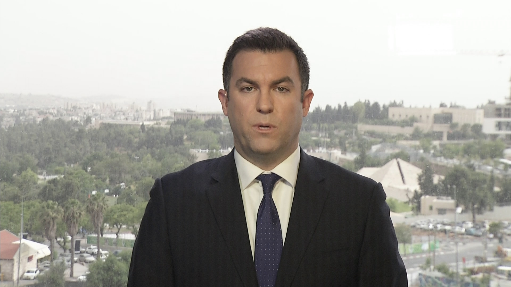

(((Cyberdissidents Dot Org)))
February 19th, 2021
Dear Diary: Jackpot.
Wikipedia:
TDC_ARTICLE_START
CyberDissidents.org is a division of Advancing Human Rights, a 501 (c) (3) non-profit organization. CyberDissidents.org focuses on the human rights of online political activists. The group believes that highlighting the plight of individual democratic dissidents in the West affords a measure of protection against government oppression.
TDC_ARTICLE_STOP
Founder: David Keyes
Oh boy oh boy oh boy am I ever excited to see a group standing up for Human Rights. Advancing them even! Maybe finally those Palestinians or White South Africans are going to be murdered a little bit less often.
TDC_ARTICLE_START
Founded in 2008, CyberDissidents.org originally focused on autocratic Middle Eastern countries. The organization's co-founder and director, David Keyes, served previously as coordinator for democracy programs under Soviet dissident Natan Sharansky. Keyes has written for The Washington Post, The Wall Street Journal, The New Republic, The Daily Beast, National Review, The Jerusalem Post and other publications.
Relying on a broad network of bloggers in the region, CyberDissidents.org monitors, analyses and publicizes dissidents' activities in the West. Its staff meet frequently with policy-makers in the United States, the Middle East and Europe. CyberDissidents.org promotes linkage between foreign aid and human rights.
The organization aims to utilize the findings of psychology professor Paul Slovic who studied the phenomenon of indifference in the face of humanitarian disasters. Professor Slovic has written that highlighting individuals is the most effective way of provoking sympathy and concern for a cause. This is seen in the organization's "Featured CyberDissident" which focuses on a particular dissident's story.
Now incorporated into Advancing Human Rights, CyberDissidents serves as a database of dissident writing and can be found at the AHR website.
TDC_ARTICLE_STOP
Actually it can't be, because this Gay-Op has run its course. (((Advancing Human Rights))) is now defunct, and gives a 404 error. I guess that means that human rights have been successfully advanced?
In reality, the organization appears to have existed from 2008 to about 2010. The earliest known event that "CyberDisidents.org" did was back in 2008, where they, according to them
TDC_ARTICLE_START
"successfully coordinated global protests at Egyptian embassies and university in the United States, Canada and Israel in support of Egyptian blogger Abdul Kareem Nabil Suleiman (also known as Kareem Amer), who was jailed in 2007 for criticizing Egyptian President Hosni Mubarak and 'insulting Islam.'"
TDC_ARTICLE_STOP
The very last known activity of theirs:
TDC_ARTICLE_START
On June 11, 2010, Keyes hosted a panel in the United States Congress. The briefing was held in the Committee on Foreign Affairs and addressed the issue of technology, Internet and access to independent media in Iran. Former Iranian deputy Prime Minister in Political Affairs, Mohsen Sazegara, and former senior director for Middle East Affairs in the National Security Council, Michael Singh joined the briefing. The panel was broadcast live on C-SPAN
TDC_ARTICLE_STOP

So long story short: this was an Israeli run OP to attempt to do various anti-democratic shit in the Middle East between 2008-2010. Now it's over, and since jews breed new organizations like rabbits, I'm sure they've got 20 more just like this.
Also interesting is a glance at their "Board of Advisors."
TDC_ARTICLE_START
- Ahmed Batebi, Chairman and Iranian cyber-dissident who was imprisoned in Iran for eight years for student activities
- Dr Saad Eddin Ibrahim, Egypt's most famous democratic dissident and founder of the Ibn Khaldun Center for Development Studies and the Arab Organization for Human Rights
- (((Irwin Cotler))), Canada's former Minister of Justice and Attorney General (NOTE: We know all about little Irwin)
- (((Natan Sharansky))), renowned Soviet dissident (On Leave)
- Peter Deutsch, former Democratic US Congressman
- (((Dorian Barak))), former war crimes prosecutor at the International Criminal Tribunal for the Former Yugoslavia in the Hague (ICTY)
- Nazanin Afshin-Jam, president and co-founder of Stop Child Executions and prime ministerially-appointed member of board of directors of the Canadian Race Relations Foundation
- Abdul Wahid al-Nur, founder of the Sudan Liberation Movement
- Jim Prince, founder and president of the Democracy Council
- Samer Libdeh, director of the Interaction Forum, a Jordanian democracy-promotion group
- Dr Nima Mina, lecturer in Persian at the School of Oriental and African Studies at the University of London
- (((Bernard Lewis))), Professor Emeritus of Near Eastern Studies at Princeton University, served on CyberDissidents.org's board of advisers for the first two years of its existence.
- (((Bob Bernstein))), Founding chairman of Human Rights Watch.
- Ahel Al Hendi, Syrian dissident. (Go Assad!)
TDC_ARTICLE_STOP
Good thing we've got our Human Rights Freedom Democracy being protected by these people!